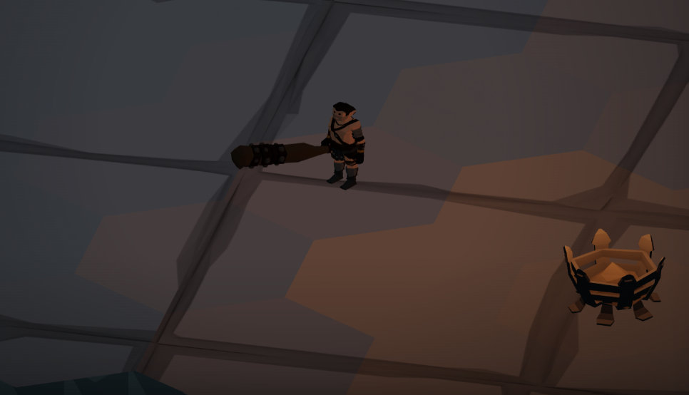

The halfling with a greatsword
Fifth edition has opinions about small creatures and heavy weapons. We have a renderer. The renderer wins.

That's the reference tomb — the three rooms every run starts from. Hex floor, authored walls, a skeleton in a cage for ambience, and the party's one shared d20 sitting where somebody dropped it. When a check happens, the die is there, on the floor, and you click it. We think dice should be objects, not popups.
And because no discovery ships alone: the barbarian build.

Somewhere under all this is a Go rules engine that takes itself very seriously — append-only world facts, per-witness knowledge, an event bus with seven laws. The halfling does not know about any of that. The halfling knows she found a sword.
More soon. There's a secret door coming.